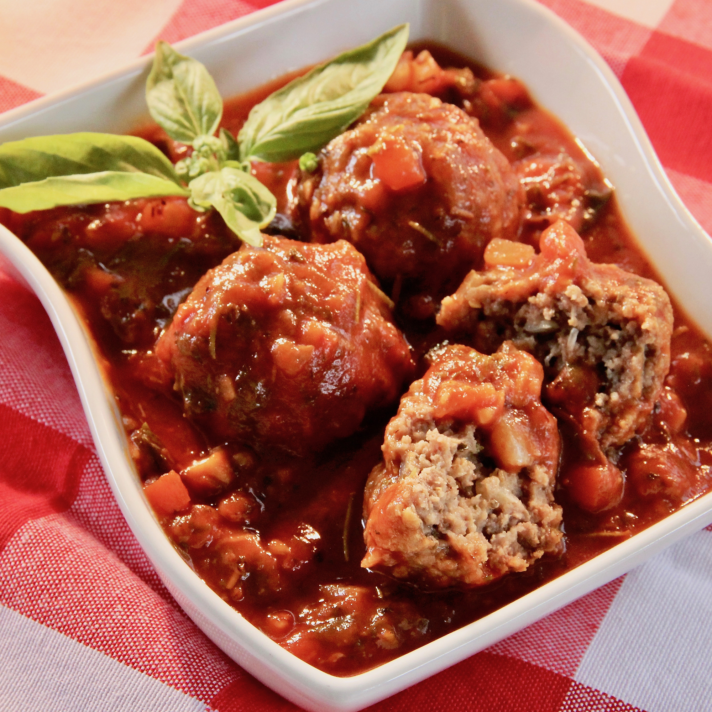

Meatball

Description
If you're looking for a super simple, comforting, no-frills bowl of spaghetti and meatballs, you've come to the right place. And if you're feeling adventurous, it's also a great jumping off point for your own version of this classic dish!
When it comes to sauce, you've got options. For an even speedier dinner, you can totally go with jarred marinara sauce. Or, if you've got some time on your hands, we love this simple Marcella Hazan-inspired spaghetti sauce. Feel free to try your own favorite herbs and spices, tasting as you go!
Ingredients
- 1 pound extra lean ground beef
- 1 small onion, diced
- ½ cup seasoned bread crumbs
- ⅓ cup skim milk
- ¼ cup grated Parmesan cheese
- ½ tablespoons Worcestershire sauce
All ingredients
Steps
- Preheat the oven to 400 degrees F (200 degrees C).
- Place ground beef, onion, bread crumbs, milk, Parmesan cheese, Worcestershire sauce, Italian seasoning, oregano, red pepper flakes, salt, garlic salt, and hot pepper sauce into a large bowl; mix until evenly combined. Shape the mixture into 12 meatballs and place onto a baking sheet.
- Bake in the preheated oven until no longer pink in the center, 20 to 25 minutes.